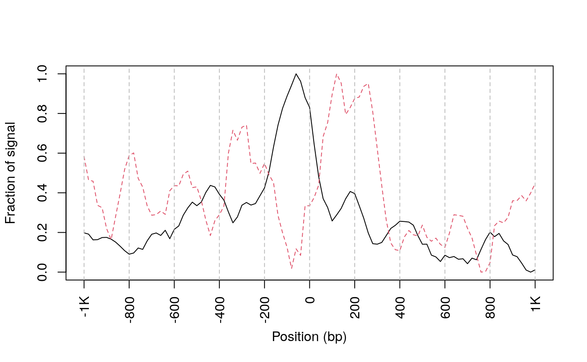

Prepare for inputs
## input the sample bamFile from the installed packaged ## the data is pre-processed chr1 data of GSM1155959 extfilePath <- system.file("extdata", "ATACseqQC", package="workshop2020", mustWork = TRUE) dir(extfilePath)
## [1] "GL3.chr1.bam" "GL3.chr1.bam.bai" "GL3.chr1.rmdup.bam"
## [4] "GL3.chr1.rmdup.bam.bai"Estimate the library complexity
## load the library library(ATACseqQC)
## Loading required package: BiocGenerics## Loading required package: parallel##
## Attaching package: 'BiocGenerics'## The following objects are masked from 'package:parallel':
##
## clusterApply, clusterApplyLB, clusterCall, clusterEvalQ,
## clusterExport, clusterMap, parApply, parCapply, parLapply,
## parLapplyLB, parRapply, parSapply, parSapplyLB## The following objects are masked from 'package:stats':
##
## IQR, mad, sd, var, xtabs## The following objects are masked from 'package:base':
##
## anyDuplicated, append, as.data.frame, basename, cbind, colnames,
## dirname, do.call, duplicated, eval, evalq, Filter, Find, get, grep,
## grepl, intersect, is.unsorted, lapply, Map, mapply, match, mget,
## order, paste, pmax, pmax.int, pmin, pmin.int, Position, rank,
## rbind, Reduce, rownames, sapply, setdiff, sort, table, tapply,
## union, unique, unsplit, which.max, which.min## Loading required package: S4Vectors## Loading required package: stats4##
## Attaching package: 'S4Vectors'## The following object is masked from 'package:base':
##
## expand.grid## No methods found in package 'IRanges' for request: 'values' when loading 'GenomicScores'## mapping status, such as mapping rate, ## duplicate rate, genome-wide distribution, ## mapping quality, and contamination. ## NOTE: requires sorted BAM files with duplicate reads marked as input. ## library complexity estimateLibComplexity(readsDupFreq(file.path(extfilePath, "GL3.chr1.bam")))


library complexity curve
Fragment size distribution
First, there should be a large proportion of reads with less than 100 bp, which represents the nucleosome-free region. Second, the fragment size distribution should have a clear periodicity, which is evident in the inset figure, indicative of nucleosome occupacy (present in integer multiples).
## set bam file name, replace file.path(extfilePath, "GL3.chr1.rmdup.bam") ## by your bam file name bamfile <- file.path(extfilePath, "GL3.chr1.rmdup.bam") (bamfile.labels <- gsub(".rmdup.bam", "", basename(bamfile)))
## [1] "GL3.chr1"## generate fragment size distribution fragSize <- fragSizeDist(bamfile, bamfile.labels)
Adjust the read start sites
Tn5 transposase has been shown to bind as a dimer and inserts two adaptors into accessible DNA locations separated by 9 bp.
Therefore, for downstream analysis, such as peak-calling and footprinting, all reads in input bamfile need to be shifted. The function shiftGAlignmentsList can be used to shift the reads. By default, all reads aligning to the positive strand are offset by +4bp, and all reads aligning to the negative strand are offset by -5bp.
The adjusted reads will be written into a new bamfile for peak calling or footprinting.
## bamfile tags to be read in possibleTag <- combn(LETTERS, 2) possibleTag <- c(paste0(possibleTag[1, ], possibleTag[2, ]), paste0(possibleTag[2, ], possibleTag[1, ])) library(Rsamtools)
## Loading required package: GenomeInfoDb## Loading required package: IRanges## Loading required package: GenomicRanges## Loading required package: Biostrings## Loading required package: XVector##
## Attaching package: 'Biostrings'## The following object is masked from 'package:base':
##
## strsplitbamTop100 <- scanBam(BamFile(bamfile, yieldSize = 100), param = ScanBamParam(tag=possibleTag))[[1]]$tag tags <- names(bamTop100)[lengths(bamTop100)==100] tags
## [1] "AS" "MD" "PG" "XG" "NM" "XM" "XN" "XO" "XS" "YS" "YT"## files will be output into outPath outPath <- "splited" dir.create(outPath) ## shift the coordinates of 5'ends of alignments in the bam file library(BSgenome.Hsapiens.UCSC.hg38)
## Loading required package: BSgenome## Loading required package: rtracklayerseqlev <- "chr1" ## subsample data for quick run which <- as(seqinfo(Hsapiens)[seqlev], "GRanges") gal <- readBamFile(bamfile, tag=tags, which=which, asMates=TRUE, bigFile=TRUE) shiftedBamfile <- file.path(outPath, "shifted.bam") gal1 <- shiftGAlignmentsList(gal, outbam=shiftedBamfile)
Promoter/Transcript body (PT) score
PT score is calculated as the coverage of promoter divided by the coverage of its transcript body. PT score will show if the signal is enriched in promoters.
library(TxDb.Hsapiens.UCSC.hg38.knownGene)
## Loading required package: GenomicFeatures## Loading required package: AnnotationDbi## Loading required package: Biobase## Welcome to Bioconductor
##
## Vignettes contain introductory material; view with
## 'browseVignettes()'. To cite Bioconductor, see
## 'citation("Biobase")', and for packages 'citation("pkgname")'.txs <- transcripts(TxDb.Hsapiens.UCSC.hg38.knownGene) pt <- PTscore(gal1, txs) plot(pt$log2meanCoverage, pt$PT_score, pch=16, cex = .5, xlab="log2 mean coverage", ylab="Promoter vs Transcript"); abline(h=0, col="red")
## Transcription Start Site (TSS) Enrichment Score
TSS enrichment score is a raio between aggregate distribution of reads centered on TSSs and that flanking the corresponding TSSs. TSS score = the depth of TSS (1000 bp each side) / the depth of end flanks (100bp each end). TSS enrichment score is calculated according to the definition at https://www.encodeproject.org/data-standards/terms/#enrichment. Transcription start site (TSS) enrichment values are dependent on the reference files used; cutoff values for high quality data are listed in the following table from https://www.encodeproject.org/atac-seq/.
Split reads
The shifted reads will be split into different bins, namely nucleosome free, mononucleosome, dinucleosome, and trinucleosome. Shifted reads that do not fit into any of the above bins will be discarded. Splitting reads is a time-consuming step because we are using random forest to classify the fragments based on fragment length, GC content and conservation scores.
By default, we assign the top 10% of short reads (reads below 100_bp) as nucleosome-free regions and the top 10% of intermediate length reads as (reads between 180 and 247 bp) mononucleosome. This serves as the training set to classify the rest of the fragments using random forest. The number of the tree will be set to 2 times of square root of the length of the training set.
## run program for chromosome 1 only txs <- txs[seqnames(txs) %in% "chr1"] genome <- Hsapiens ## split the reads into NucleosomeFree, mononucleosome, ## dinucleosome and trinucleosome. ## and save the binned alignments into bam files. objs <- splitGAlignmentsByCut(gal1, txs=txs, genome=genome, outPath = outPath) ## list the files generated by splitGAlignmentsByCut. dir(outPath)
## [1] "dinucleosome.bam" "dinucleosome.bam.bai" "inter1.bam"
## [4] "inter1.bam.bai" "inter2.bam" "inter2.bam.bai"
## [7] "inter3.bam" "inter3.bam.bai" "mononucleosome.bam"
## [10] "mononucleosome.bam.bai" "NucleosomeFree.bam" "NucleosomeFree.bam.bai"
## [13] "others.bam" "others.bam.bai" "shifted.bam"
## [16] "shifted.bam.bai" "trinucleosome.bam" "trinucleosome.bam.bai"Heatmap and coverage curve for nucleosome positions
By averaging the signal across all active TSSs, we should observe that nucleosome-free fragments are enriched at the TSSs, whereas the nucleosome-bound fragments should be enriched both upstream and downstream of the active TSSs and display characteristic phasing of upstream and downstream nucleosomes. Because ATAC-seq reads are concentrated at regions of open chromatin, users should see a strong nucleosome signal at the +1 nucleosome, but the signal decreases at the +2, +3 and +4 nucleosomes.
library(ChIPpeakAnno) bamfiles <- file.path(outPath, c("NucleosomeFree.bam", "mononucleosome.bam", "dinucleosome.bam", "trinucleosome.bam")) TSS <- promoters(txs, upstream=0, downstream=1) TSS <- unique(TSS) ## estimate the library size for normalization (librarySize <- estLibSize(bamfiles))
## splited/NucleosomeFree.bam splited/mononucleosome.bam
## 10140 3426
## splited/dinucleosome.bam splited/trinucleosome.bam
## 2748 0## calculate the signals around TSSs. NTILE <- 101 dws <- ups <- 1010 sigs <- enrichedFragments(gal=objs[c("NucleosomeFree", "mononucleosome", "dinucleosome", "trinucleosome")], TSS=TSS, librarySize=librarySize, seqlev=seqlev, TSS.filter=0.5, n.tile = NTILE, upstream = ups, downstream = dws) ## log2 transformed signals sigs.log2 <- lapply(sigs, function(.ele) log2(.ele+1)) #plot heatmap featureAlignedHeatmap(sigs.log2, reCenterPeaks(TSS, width=ups+dws), zeroAt=.5, n.tile=NTILE)

metagene
## get signals normalized for nucleosome-free and nucleosome-bound regions. out <- featureAlignedDistribution(sigs, reCenterPeaks(TSS, width=ups+dws), zeroAt=.5, n.tile=NTILE, type="l", ylab="Averaged coverage")
## Warning in featureAlignedDistribution(sigs, reCenterPeaks(TSS, width = ups + :
## cvglists contain NA values. NA value will be omit.## rescale the nucleosome-free and nucleosome signals to 0~1 range01 <- function(x){(x-min(x))/(max(x)-min(x))} out <- apply(out, 2, range01) matplot(out, type="l", xaxt="n", xlab="Position (bp)", ylab="Fraction of signal");axis(1, at=seq(0, 100, by=10)+1, labels=c("-1K", seq(-800, 800, by=200), "1K"), las=2);abline(v=seq(0, 100, by=10)+1, lty=2, col="gray")

plot Footprints
ATAC-seq footprints infer factor occupancy genome-wide. The factorFootprints function uses matchPWM to predict the binding sites using the input position weight matrix (PWM). Then it calculates and plots the accumulated coverage for those binding sites to show the status of the occupancy genome-wide. Unlike CENTIPEDE, the footprints generated here do not take the conservation (PhyloP) into consideration. factorFootprints function could also accept the binding sites as a GRanges object.
## foot prints library(MotifDb)
## See system.file("LICENSE", package="MotifDb") for use restrictions.## 1 2 3 4 5 6 7 8 9 10 11 12 13
## A 0.10 0.16 0.30 0.072 0.012 0.786 0.024 0.122 0.914 0.012 0.376 0.022 0.028
## C 0.36 0.21 0.10 0.826 0.966 0.024 0.620 0.494 0.010 0.008 0.010 0.022 0.002
## G 0.12 0.41 0.44 0.050 0.012 0.108 0.336 0.056 0.048 0.976 0.602 0.606 0.962
## T 0.42 0.22 0.16 0.052 0.010 0.082 0.020 0.328 0.028 0.004 0.012 0.350 0.008
## 14 15 16 17 18 19
## A 0.024 0.096 0.424 0.086 0.12 0.34
## C 0.016 0.818 0.024 0.532 0.35 0.26
## G 0.880 0.038 0.522 0.326 0.12 0.32
## T 0.080 0.048 0.030 0.056 0.41 0.08sigs <- factorFootprints(shiftedBamfile, pfm=CTCF[[1]], genome=genome, min.score="90%", seqlev=seqlev, upstream=100, downstream=100)

CTCF footprints
V-plot
V-plot is a plot to visualize fragment midpoint vs length for a given transcription factors.
vp <- vPlot(shiftedBamfile, pfm=CTCF[[1]], genome=genome, min.score="90%", seqlev=seqlev, upstream=200, downstream=200, ylim=c(30, 250), bandwidth=c(2, 1))

CTCF vPlot